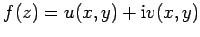
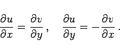
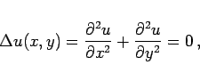
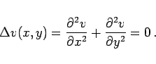
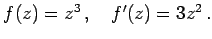
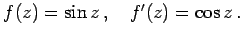

Inhalt Index DeskTop Bronstein

 Funktionentheorie Funktionen einer komplexen Veränderlichen Analytische Funktionen
Funktionentheorie Funktionen einer komplexen Veränderlichen Analytische Funktionen


Eine Funktion f(z) heißt in einem Gebiet G analytisch, regulär oder holomorph, wenn sie in allen Punkten von G differenzierbar ist. Randpunkte von , in denen f'(z) nicht existiert, sind singuläre Punkte von f(z).
Die Funktion  ist genau dann in G differenzierbar, wenn u und v stetige partielle Ableitungen nach x und y in G besitzen und dort die CAUCHY-RIEMANNschen Differentialgleichungen gelten:
|  | (14.4) |
Real- und Imaginärteil einer analytischen Funktion genügen für sich der LAPLACEschen Differentialgleichung
|  | (14.5a) |
|  | (14.5b) |
Die Ableitungen der elementaren Funktionen einer komplexen Veränderlichen werden nach den gleichen Formeln berechnet wie die Ableitungen der entsprechenden Funktionen einer reellen Veränderlichen.
| Beispiel A |
|
 |
| Beispiel B |
|
 |